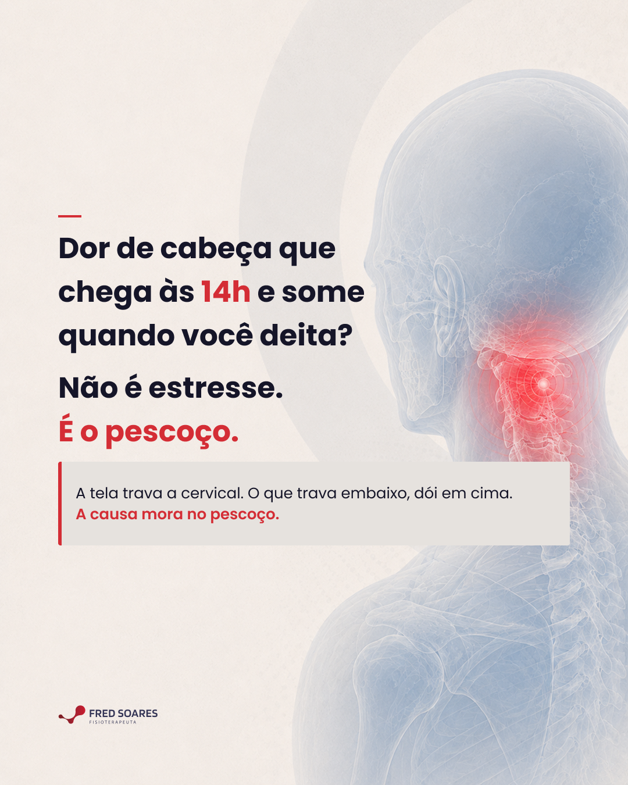
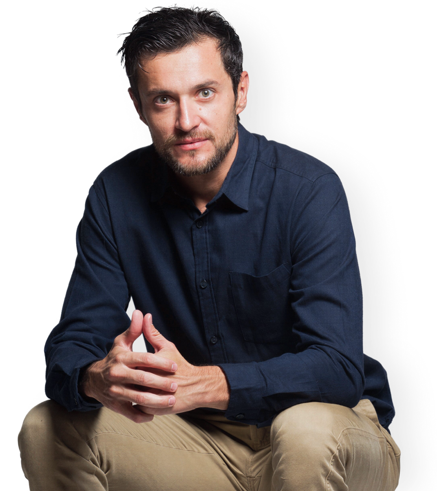
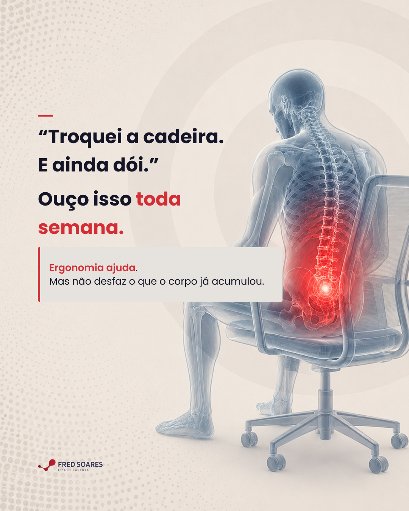
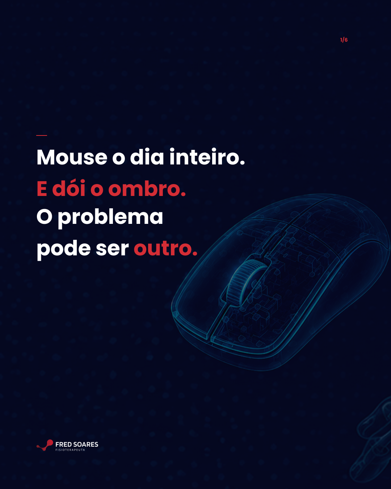
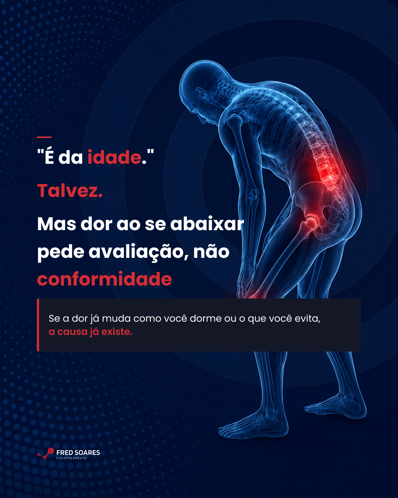
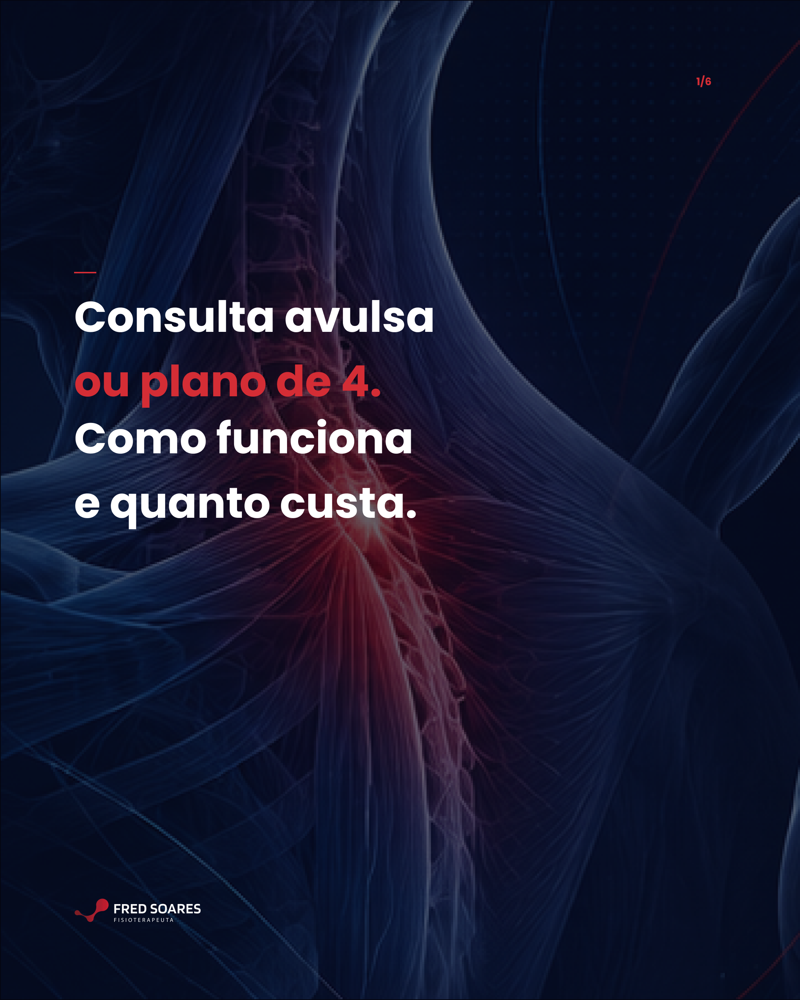

Calendário Editorial · Instagram · Julho 2026
Mês 2
Dr. Fred
Soares
Osteopata · Especialista em coluna
Intermares, Cabedelo
Apresentação por Arrive In Digital

Osteopata · Especialista em coluna
Intermares, Cabedelo
Apresentação por Arrive In Digital



6 slides

6 slidesGrade 3×3 · 8 publicações em ordem de postagem. Clique em qualquer imagem para ampliar.
Hooks virais verificados. Avatar Home Office formalizado pela primeira vez. Posicionamento inalterado.
Promessa central
"ir na causa, não no sintoma. 4–5 sessões. resolvido."
Filtre por formato. Clique em "Ver brief" para ver frase, legenda e instruções de design.
| Tempo | Bloco | Fala |
|---|---|---|
| 0–4s | Gancho | Paquetá saiu lesionado. Voltou. Lesionou de novo. Isso acontece toda semana no consultório — com atletas e com pessoas que ficam sentadas 8 horas por dia. |
| 4–18s | Mecanismo | Lesão de posterior de coxa tem uma causa comum: quando a lombar ou bacia está restrita, o posterior compensa. Tratando só o músculo — ele volta ao mesmo padrão de sobrecarga. A lesão se repete. |
| 18–38s | O erro | O retorno rápido sem avaliar a cadeia é o ciclo mais comum que eu vejo. No atleta, é pressa para voltar. No home office, é "já está melhor, vou continuar trabalhando." A causa continua. A dor volta. |
| 38–53s | Diferencial | A avaliação encontra onde está a restrição que gerou a sobrecarga. No Paquetá pode ser a bacia. Em você pode ser a lombar, a cervical, ou tensão acumulada de horas na cadeira. Tratar a causa muda o resultado do retorno. |
| 53–60s | CTA | Dor que volta com frequência, no treino ou no trabalho: manda mensagem. A avaliação define o caminho. 4–5 sessões. Resolvido. Estou em Intermares. |
| # | Slide | Copy |
|---|---|---|
| 1 | Capa | 2 horas de reunião. Mouse o dia inteiro. Ou supino, desenvolvimento, elevação lateral. E dói o ombro. Você culpou o mouse. Ou o exercício. O problema pode ser outro. |
| 2 | A cadeia | O ombro depende de uma cadeia: → Coluna cervical → Coluna torácica → Escápula → Postura geral na cadeira e no treino. Uma restrição em qualquer ponto pode aparecer como dor no ombro. |
| 3 | O que você sente | Dor ao levantar o braço. Desconforto após horas no computador. Limitação no supino ou desenvolvimento. Sensação de travamento ou "clique". Pode ter origem na cervical, torácica ou escápula — não necessariamente no ombro. |
| 4 | O erro | Trocar o mouse. Colocar suporte ergonômico. Parar o exercício que dói. Se a restrição está em outro ponto da cadeia, a dor volta — no trabalho ou no treino. Tratar o ponto de dor sem avaliar a cadeia é tratar o sintoma. |
| 5 | A avaliação | Na avaliação, eu observo: → Como o ombro se move em relação à cervical e à escápula → Onde está a restrição real — se vem do trabalho, do treino ou dos dois → O que o corpo está compensando. O mouse e o exercício não são os inimigos. A restrição não identificada é. |
| 6 | CTA | Dr. Fred Soares · Osteopata especialista em coluna · Instituto de Madrid + Mestrado USP · +20 anos · +10.000 pacientes · 📍 Intermares, Cabedelo · Dor no ombro limitando o trabalho ou o treino? Agenda uma avaliação. |
| Tempo | Bloco | Fala |
|---|---|---|
| 0–4s | Gancho | Travou a lombar. O instinto é parar tudo. Esse instinto pode estar prolongando a sua recuperação. |
| 4–15s | Validação | Faz sentido querer parar. Dói pra se mover, parece que qualquer coisa piora. Mas o que a gente sabe sobre dor musculoesquelética é: repouso absoluto por mais de dois dias raramente ajuda. |
| 15–38s | Mecanismo | Os tecidos precisam de movimento pra se organizar. A musculatura que sustentava a coluna começa a enfraquecer quando você para tudo. A rigidez piora com a imobilidade. Isso vale pra quem treina e ficou parado. Vale também pra quem já trabalha sentado e ficou ainda mais imóvel. |
| 38–53s | Orientação | O que ajuda é movimento seguro e progressivo — dentro do que o corpo consegue, sem forçar. Mas o tipo de movimento que funciona depende da causa. Pra quem travou no treino é diferente de quem travou depois de uma semana intensa no computador. Por isso avaliação vem antes de qualquer protocolo. |
| 53–65s | CTA | Travou e não sabe o que fazer: não fique parado e não force. Manda mensagem. A avaliação define o caminho. Em média 4–5 sessões. Resolvido. Estou em Intermares. |
Dr. Fred Soares · Calendário Editorial Mês 2 · Julho 2026 · Arrive In Digital